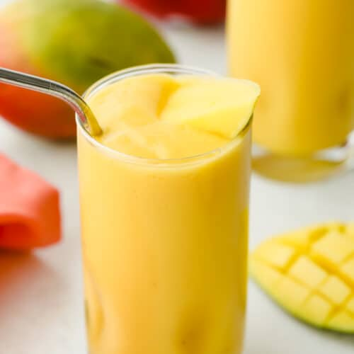

Mango Smoothie Recipe

Description:
Whip up this refreshing mango smoothie recipe for an instant energy boost! Each serving delivers nutrient-rich fruits, fiber, protein, and probiotics. It only takes a few minutes to prepare this cool and creamy tropical-inspired drink.
Ingredients:
- 1 cup ice cubes
- 2 cups frozen mango chunks
- 1/2 cup banana slices, about 1 medium banana
- 1/2 cup plain Greek yogurt
- 3/4 cup orange juice
- 1 teaspoon honey, optional
Steps:
- Add ice cubes, frozen mango, banana slices, yogurt, orange juice, and honey (if using) to a blender.
- Cover and process on medium speed for about 30 seconds, using the tamper as needed. Increase to high speed for 15 to 30 seconds until thick and smooth.
- Adjust the smoothie with more orange juice if needed to reach the desired consistency.
- Taste and add more honey if needed to balance the tart flavor.